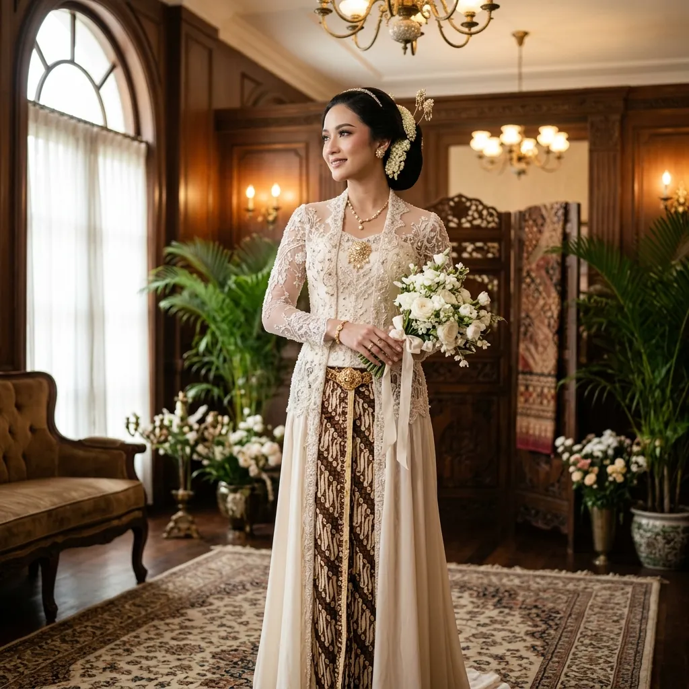

Delhi Busana menghadirkan koleksi busana adat Indonesia eksklusif untuk pernikahan, Hari Kartini, dan momen spesial Anda. Sewa atau beli dengan kualitas premium.

Kami mendedikasikan diri untuk melestarikan keindahan Nusantara.
Wujudkan pernikahan impian Anda dengan balutan busana adat autentik dan mewah yang memancarkan aura bangsawan.
Tampil anggun dan percaya diri di acara peringatan seperti Hari Kartini dengan kebaya modern yang tetap menjunjung akar tradisi.
Sewa koleksi busana profesional dengan detail menawan untuk kebutuhan fotografi komersial maupun pribadi.
Mengapa kami menjadi pilihan kebanggaan pelanggan nusantara?
Setiap busana dirancang menggunakan sutra, brokat, dan songket pilihan yang jatuh sempurna dan sangat nyaman dikenakan.
Standar kebersihan yang ketat! Busana selalu dirawat dan dicuci secara profesional tiap sebelum dan sesudah disewa oleh pelanggan.
Koleksi pusaka kami menjunjung tinggi pakem tradisi. Mulai dari mahkota siger, sortali, hingga paes dibuat rapi menyuguhkan kesan sakral.
Jelajahi spesifikasi dan detail ragam busana adat Nusantara kami yang dibuat dari bahan terbaik.
Aura ningrat terpancar melalui balutan beludru dan sulam benang emas. Dirancang mengikuti standarisasi pakaian adat keraton dengan pakem yang masih terjaga.
Kesan mewah dan berkelas dengan sentuhan merah terang dan emas. Kebaya Minang yang dilengkapi mahkota Suntiang yang agung sangat memukau untuk hari pernikahan Anda.
Memancarkan aura ningrat khas pulau dewata. Dibalut dengan kain prada dan mahkota menjulang yang menghadirkan keagungan tingkat tinggi.
Dikenal sebagai salah satu pakaian tradisional tertua di dunia, Baju Bodo modern kami pertahankan keasliannya dengan warna-warna cerah dan kilauan perhiasan emas yang mewah.
Kesan mewah dan anggun dari pulau kalimantan. Balutan warna cerah yang kaya akan unsur keemasan, menghadirkan nuansa hangat dan mempesona untuk hari bahagia Anda.
Tersedia pasangan selaras untuk wanita dan pria. Memadukan kenyamanan modern dengan siluet klasik. Cocok untuk Anda berdua yang ingin tampil elegan, ringkas, dan memukau.
Kesan syahdu nan anggun khas tatar Sunda. Balutan kebaya mewah dengan paduan mahkota Siger dan ronce melati yang memancarkan pesona pengantin Parahyangan.
Pesona keanggunan Danau Toba. Menampilkan lilitan kain tenun tradisional Ulos bernuansa merah, hitam, dan emas yang melambangkan kebesaran serta keberanian.
Kecantikan alam rimba Borneo! Terdiri dari ukiran manik-manik tradisional berwarna cerah di atas kain velvet pekat serta mahkota eksotis dengan ornamen bulu enggang.
Pernikahan gaya modern-tradisional. Kebaya pas badan dipadukan dengan selendang/kain bermotif Prada (kain berlapis prada emas) yang bersinar.
Balutan busana Bili'u yang megah tiada tara! Menawarkan nuansa warna cerah mencolok dengan kombinasi rentetan perhiasan emas bertingkat dari ujung rambut hingga kaki.
Tim ahli kami siap membantu Anda menyesuaikan ukuran dan memilih busana yang paling pas untuk momen penting Anda.